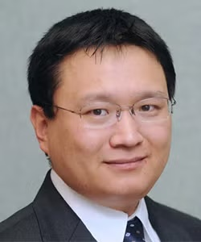

Nanofocusing and near-field microscopy
Efficient fiber-coupled nanofocusing enables lens-free Raman imaging at 1 nm resolution. A nanoscale white-light source extends transmission and scattering spectroscopy to 6 nm resolution on carbon nanotubes.

I am a faculty member in Electrical and Computer Engineering at the University of California, Riverside. My research centers on nanofocusing: concentrating light at the nanometer scale to study light–matter interactions, develop optical measurement tools, and understand nanoscale devices and interfaces.
I also serve as Graduate Advisor for Enrolled Students in the Department of Electrical and Computer Engineering.
My research also integrates physics-guided machine learning with nanoscale optical measurements, including data-driven microscopy, Bayesian optimization, and inverse design of photonic and plasmonic systems.
My primary research contribution is the invention of high-external-efficiency nanofocusing. This technique concentrates more than 50% of incident light from an optical fiber into an optical hotspot approximately 5 nm in size, enabling advanced studies of light–matter interactions.
Foundational paper · Nature Photonics · 2019
Nanofocusing is the central thread connecting my work in tip-enhanced Raman spectroscopy (TERS), near-field microscopy, photocurrent imaging, NV quantum sensing, and electrochemical interfaces. Machine learning provides a complementary route to designing optical structures and interpreting nanoscale measurements.
Nanofocusing · TERS & near-field microscopy · Photocurrent · NV quantum sensing · Electrochemical interfaces · Machine learning
Efficient fiber-coupled nanofocusing enables lens-free Raman imaging at 1 nm resolution. A nanoscale white-light source extends transmission and scattering spectroscopy to 6 nm resolution on carbon nanotubes.
My work combines physics-guided neural networks and inverse design for photonic–plasmonic nanofocusing with ML-assisted optical characterization of nanoscale objects. Research interests also include Bayesian optimization for optical design and measurements.
Three-dimensional near-field photocurrent imaging separates photovoltaic and photothermoelectric responses in MoS2–gold interfaces, revealing how local electrical and thermal processes shape photodetection.
Remote-excitation silver-nanowire probes improve contrast in AFM-TERS imaging. A research direction is to extend nanofocused vibrational measurements to electrochemical interfaces, connecting local optical signals with interfacial processes.
Plasmonic trapping assembles nitrogen-vacancy nanodiamonds at a nanofocusing tip and enhances their fluorescence. We are developing this platform into a next-generation quantum imaging tool using optically detected magnetic resonance (ODMR). In ODMR, microwaves probe the NV centers’ spin states, while changes in their fluorescence provide an optical readout. Because the resonance depends on the local magnetic field, this approach could enable nanoscale magnetic imaging.
Waveguide-integrated graphene enables compact, broadband electrical control of light. A double-layer design further develops this approach for integrated optoelectronic devices.
Journal articles in reverse chronological order. View the full list on Google Scholar.
Science Advances 11, eadv7614 (2025).
Nano Letters 24, 11661–11668 (2024).
ACS Applied Materials & Interfaces 15, 18244–18251 (2023).
ACS Applied Materials & Interfaces 14, 27397–27404 (2022).
Laser & Photonics Reviews 16, 2100658 (2022).
ACS Applied Materials & Interfaces 14, 4434–4442 (2022).
Nature Communications 12, 6868 (2021).
ACS Applied Materials & Interfaces 12, 28306–28312 (2020).
Nature Photonics 13, 636–643 (2019).
Nano Letters 19, 100–107 (2019).
Nano Letters 17, 6961–6967 (2017).
Nano Letters 16, 6896–6902 (2016).
Nano Letters 12, 1482–1485 (2012).
Nature 474, 64–67 (2011).
Nature Nanotechnology 5, 570–573 (2010).
Physical Review Letters 101, 047401 (2008).
My teaching spans the electrical engineering curriculum, from foundational circuit analysis and electronic design to electromagnetics and graduate-level quantum mechanics. This breadth allows me to connect practical engineering methods with the physical principles behind modern devices and optical systems.
Courses I have taught at UC Riverside include: